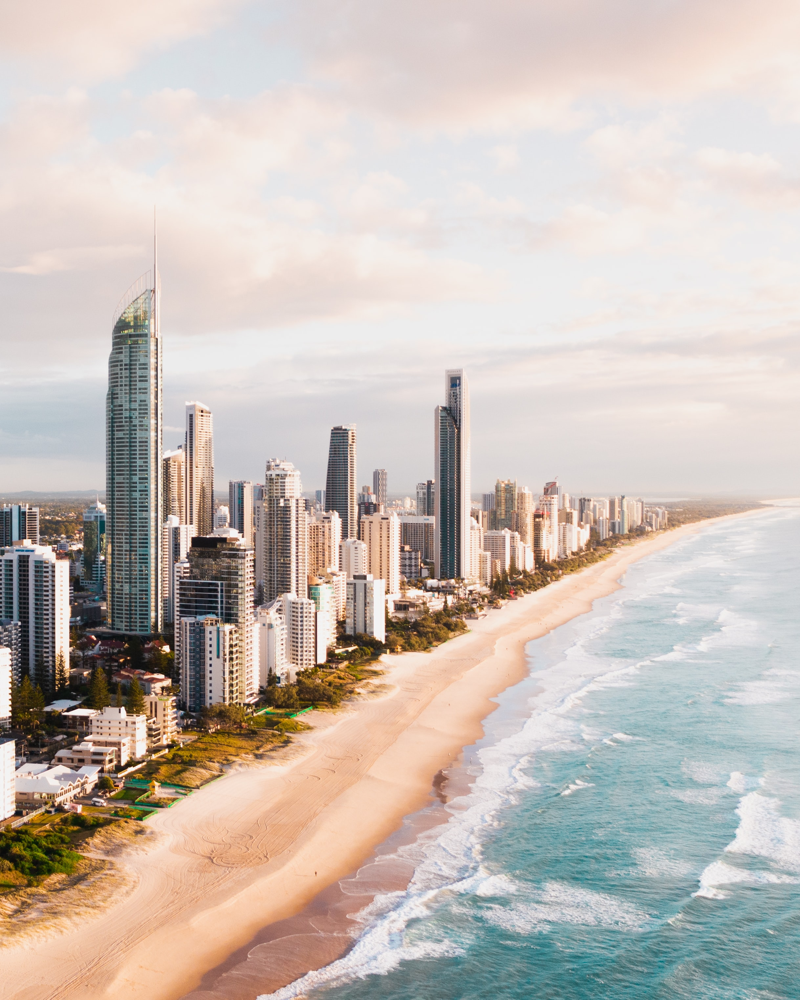
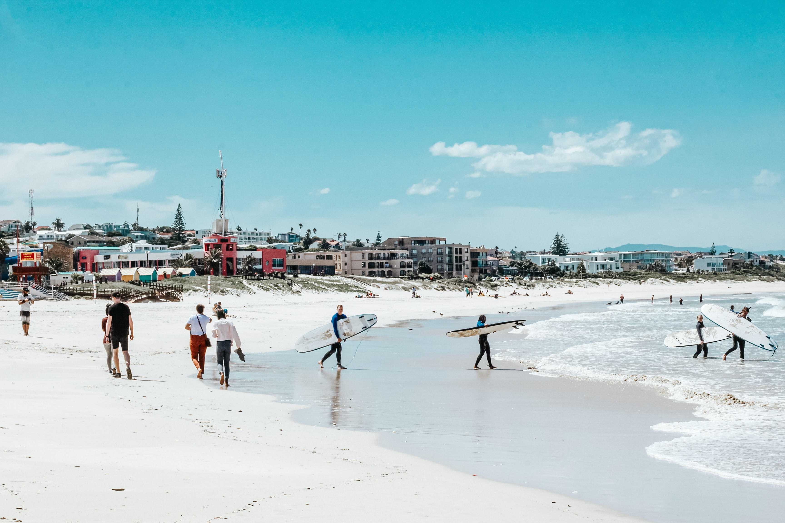
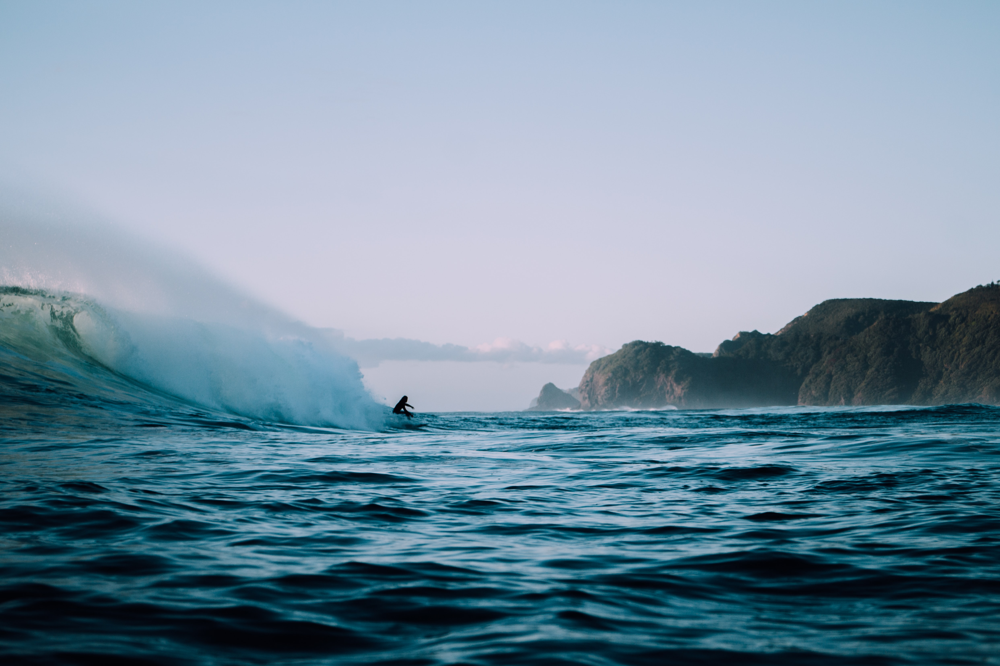
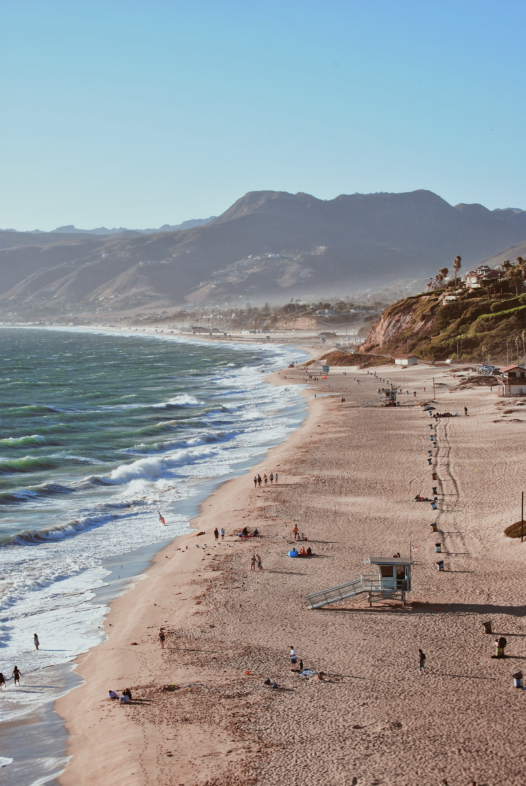
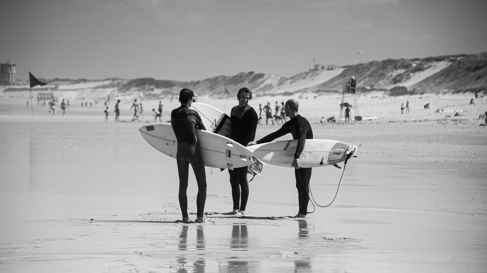

1. Gold Coast, Australië
De Gold Coast is de thuisbasis van een aantal wereldberoemde stranden, waaronder Surfers Paradise, Burleigh Heads en Coolangatta. Deze stranden staan bekend om hun prachtige gouden zand en kristalhelder water, en zijn populair om te surfen.
2. Jeffrey's bay, Zuid-Afrika
Jeffrey's Bay staat bekend om zijn uitstekende surfomstandigheden, waardoor het een populaire bestemming is voor surfers uit de hele wereld. De stad ligt aan de Indische Oceaan en is de thuisbasis van een aantal surfbreaks van wereldklasse, waaronder Supertubes, dat wordt beschouwd als een van de beste golven ter wereld.
3. Bukit Peninsula, Bali
Bukit Peninsula is een regio gelegen op het zuidelijke puntje van het eiland Bali, Indonesië. Het staat bekend om zijn prachtige stranden en surfspots, die surfers van over de hele wereld aantrekken. Het surfseizoen op Bukit Peninsula loopt meestal van april tot oktober, wanneer de golven het grootst en het meest constant zijn.
4. Malibu, Amerika
Malibu is een stad aan de westkust van de Verenigde Staten, in de staat Californië. Het is bekend om zijn prachtige stranden en golven, en het is een populaire bestemming voor surfers van over de hele wereld. Malibu heeft een aantal verschillende surfspots, die variëren in moeilijkheidsgraad en golfhoogte. De meeste surfspots in Malibu zijn geschikt voor zowel beginners als gevorderden, hoewel sommige spots bekend staan om hun hoge golven en zijn daarom beter geschikt voor ervaren surfers.
5. Oahu, Hawaii

Oahu is een van de eilanden van Hawaï en het is een populaire bestemming voor surfers van over de hele wereld. Het eiland heeft een aantal verschillende surfspots, die variëren in moeilijkheidsgraad en golfhoogte. Een van de meest bekende surfspots op Oahu is Waikiki Beach, dat bekend staat om zijn gematigde golven en geschikt is voor zowel beginners als gevorderden.
6. Hossegor, Frankrijk
Hossegor is een stad in de Franse regio Nouvelle-Aquitaine, gelegen aan de Atlantische kust. Het is een populaire bestemming voor surfers van over de hele wereld vanwege de goede golven die er te vinden zijn. Hossegor heeft een aantal verschillende surfspots, die variëren in moeilijkheidsgraad en golfhoogte.